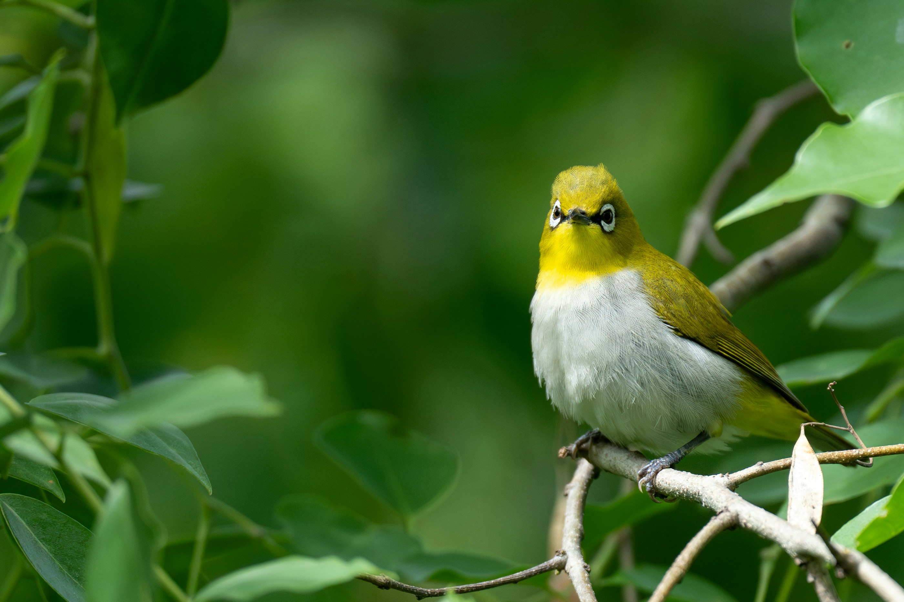

The Oriental White-eye is a tiny, active bird with a conspicuous white ring around the eye, olive-green upperparts, and yellowish underparts. It moves rapidly through foliage while searching for insects, nectar, and small fruits. White-eyes are highly social and often travel in small groups. They are common in gardens, forests, plantations, and urban greenery.